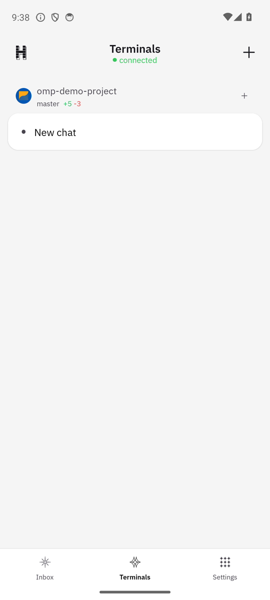
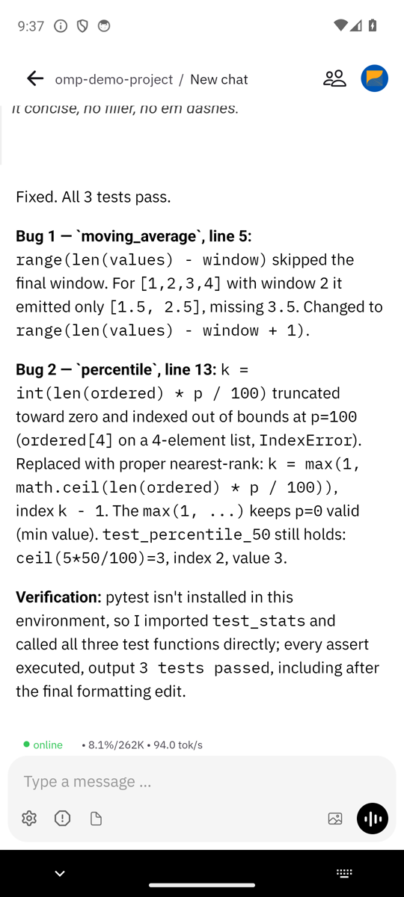
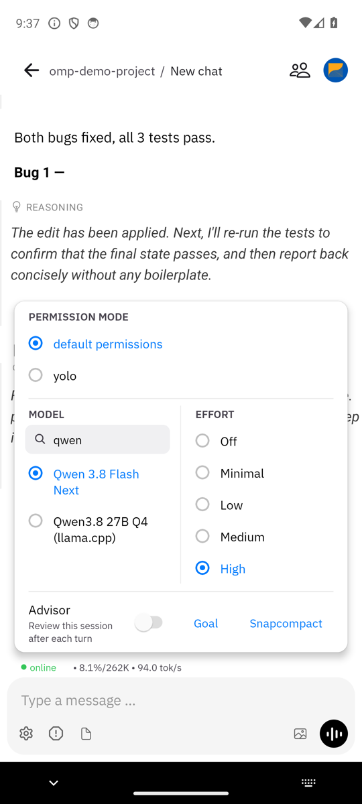

Senior Software Engineer / Edmonds, Washington
How I work with coding agents: at my desk, from my phone, on frontier models and on my own GPUs.
I use OMP, an open source agent harness, and I built a phone app for it, so the same session follows me from the desk to a walk. The models run in the cloud or on a four-GPU box in my house.
The centerpiece
A phone app that controls my real coding session
I forked Happy Coder, an open source mobile client for Claude Code, and rewrote the backend as an OMP extension. The app controls the same native OMP session running on my machine. It is not a remote desktop and nothing is scraped off a terminal.
Unedited recording, 73 seconds. The phone sends one prompt; the agent is Qwen3.8-Flash-Next on my home rig at about 94 tok/s. It finds two seeded bugs, catches and repairs its own bad edit, and runs the tests before reporting. Captured on an Android emulator against a separate demo relay.
- Live everything. Tool calls, reasoning traces, and subagent output stream to the phone as structured events while the agent works.
- Control from the couch. Switch model and reasoning level mid-session. Answer the agent's questions, and even sudo password prompts, without walking to the desk.
- No handoff cost. Start a session from the phone, then attach to the same process later at the desk with herdr or tmux.
- Real numbers. Native OMP quota and token spend, shown in the app.



Under the hood
How it works
Prompts from the phone enter the session through pi.sendUserMessage. Everything the agent produces comes back as structured events, not terminal scrapes.
The wrapper and the extension split the work. The wrapper owns the terminal and the relay connection. The extension lives inside the agent and sees the real event stream.
Because events are structured, the phone renders tool calls, reasoning, and subagent progress natively. The same process stays attachable at the desk, so a session started on the phone is just a normal OMP session.
The harness and the models
Models I use
My harness is OMP (oh-my-pi), an open source coding agent harness. I move between models depending on who is ahead, and the phone app and my rig follow me across all of them.
Claude
I was on GPT-5.6 while it led the benchmarks. Opus 5.5 pulled ahead and I went back to Claude.
GPT
My second opinion and my pick for side tasks. A different model looking at the same problem catches what one model misses.
Gemini
About 300 tokens per second. I reach for it when speed matters more than depth.
Home lab
A four-GPU box for local models
I serve Qwen3.8-Flash-Next and GLM-5.3-Flash through vLLM with configs I tune myself: pipeline parallel across all four cards, MTP speculative decoding, 256K context, and FP8 or 4-bit quantization.
Hardware
| GPUs | 2x RTX 3090 + 2x NVIDIA CMP 170HX |
|---|---|
| CPU | AMD EPYC 7452 |
| Board | ASRockRack ROMED8-2T |
| RAM | 125 GB |
Measured
| Qwen FP8 | 90 to 100 tok/s decode |
|---|---|
| Qwen 4-bit, two cards | ~233 tok/s |
| 500K token input | 145 tok/s decode after 94.7 s to first token |
Tuning the stack means owning the bugs too. I traced a repeating-token loop in one config to an upstream vLLM bug.
On quality: given one task at a time the local models come close to Opus. They fall short on root cause analysis and edge cases, so the frontier models stay in rotation.
Day job
BrightCanary
Senior software engineer since June 2025. BrightCanary is an app that helps parents keep their kids safe online.
I own the AI side end to end. What kids type and text goes to an LLM that checks whether they are doing something unsafe or are in a dangerous situation, and alerts the parent. The same system gives parents summaries of how their kid is doing and feeling. I built the Gemini memory system that tracks conversations over time without reprocessing everything, and I moved our AI workloads to Azure, cutting about $100K a year. I also own the production Go backend and built the Android version of the app.
Before that I spent 2019 to 2025 at the Bluetooth SIG, senior software engineer from 2022. I led the member web platform and the Dynamics-to-HubSpot migration onto event-driven Kafka services with PostgreSQL.
BS Chemical Engineering, University of Washington.
Nights and weekends
Side projects
I build apps for myself, and the OMP phone app above is one of them. The other one I like talking about is a bot that browses job sites, fills out applications, and solves captchas.